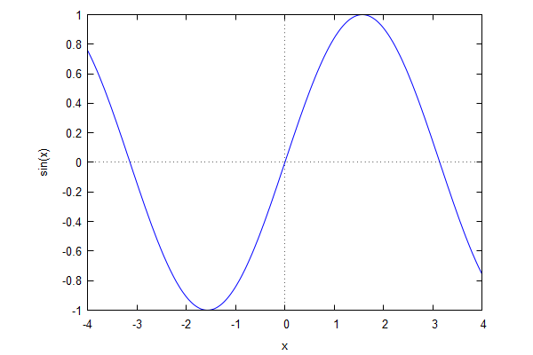
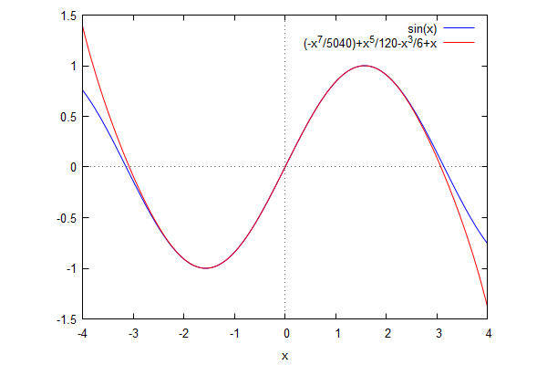
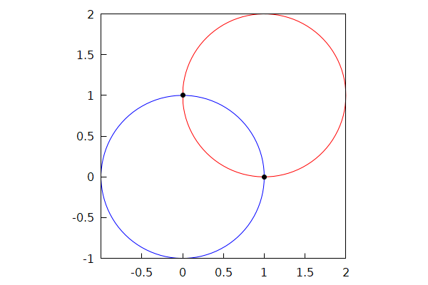

\( \DeclareMathOperator{\abs}{abs} \newcommand{\ensuremath}[1]{\mbox{$#1$}} \)
Lab sheet 1
| --> | 2 + 2 ; |
\[\operatorname{ }4\]
| --> | ( 3 + 7 + 10 ) · ( 1000 − 8 ) / ( 900 + 90 + 2 ) − 17 ; |
\[\operatorname{ }3\]
| --> | 6 ^ 20 · 15 ^ 20 / 9 ^ 20 ; |
\[\operatorname{ }100000000000000000000\]
| --> | ( 10 ^ 10 − 1 ) / 99 ; |
\[\operatorname{ }101010101\]
| --> | ( 10 ^ 10 − 10 − 9 ^ 2 ) / 9 ^ 2 ; |
\[\operatorname{ }123456789\]
| --> | ( 10 ^ 9 + 1 ) · ( 10 ^ 10 − 10 − 9 ^ 2 ) / 9 ^ 2 ; |
\[\operatorname{ }123456789123456789\]
| --> | 1 + 1 / 2 + 1 / 3 + 1 / 4 ; |
\[\operatorname{ }\frac{25}{12}\]
| --> | ev ( % , numer ) ; |
\[\operatorname{ }2.083333333333333\]
| --> | vals : [ 3 + 1 / 7 , 3 + 1 / ( 7 + 1 / 15 ) , 3 + 1 / ( 7 + 1 / ( 15 + 1 / ( 293 ) ) ) ] ; |
\[\operatorname{(vals) }[\frac{22}{7},\frac{333}{106},\frac{97591}{31065}]\]
| --> | ev ( vals , numer ) ; |
\[\operatorname{ }[3.142857142857143,3.141509433962264,3.14150973764687]\]
| --> | ev ( map ( lambda ( [ x ] , x − %pi ) , vals ) , numer ) ; |
\[\operatorname{ }[0.001264489267349678,-8.32196275291075 {{10}^{-5}},-8.291594292364479 {{10}^{-5}}]\]
| --> | fpprec ; |
\[\operatorname{ }16\]
| --> | fpprec : 4997 ; |
\[\operatorname{(fpprec) }4997\]
| --> | bfloat ( %e ) ; |
\[\operatorname{ }2.7182818284590452353602874713[4940 digits]9431040800296873869117066666b0\]
| --> | fpprec : 16 $ ; |
| --> | fpprec : 40 $ ; |
| --> | x : exp ( %pi · sqrt ( 163 ) ) ; |
\[\operatorname{(x) }{{\% e}^{\sqrt{163} \ensuremath{\pi} }}\]
| --> | y : bfloat ( x ) ; |
\[\operatorname{(y) }2.625374126407687439999999999992500725972b17\]
| --> | printf ( true , "~h" , y ) $ ; |
\[\]\[262537412640768743.9999999999992500725972\]
| --> | z : round ( y ) ; |
\[\operatorname{(z) }262537412640768744\]
| --> | z − y ; |
\[\operatorname{ }7.499274027921747441248912641187374106266b-13\]
| --> | kill ( x , y , z ) ; |
\[\operatorname{ }\ensuremath{\mathrm{done}}\]
| --> | A : ( x ^ 2 − 4 · y ^ 2 ) / ( x ^ 3 − x · y ^ 2 ) ; |
\[\operatorname{(A) }\frac{{{x}^{2}}-4 {{y}^{2}}}{{{x}^{3}}-x {{y}^{2}}}\]
| --> | factor ( A ) ; |
\[\operatorname{ }\frac{\left( 2 y-x\right) \, \left( 2 y+x\right) }{x\, \left( y-x\right) \, \left( y+x\right) }\]
| --> | expand ( A ) ; |
\[\operatorname{ }\frac{{{x}^{2}}}{{{x}^{3}}-x {{y}^{2}}}-\frac{4 {{y}^{2}}}{{{x}^{3}}-x {{y}^{2}}}\]
| --> | kill ( A ) $ ; |
| --> | y : 2 · x / ( x ^ 2 − 1 ) + 1 / ( x + x ^ 2 ) + 1 / ( x − x ^ 2 ) ; |
\[\operatorname{(y) }\frac{1}{{{x}^{2}}+x}+\frac{2 x}{{{x}^{2}}-1}+\frac{1}{x-{{x}^{2}}}\]
| --> | ratsimp ( y ) ; |
\[\operatorname{ }\frac{2}{x}\]
| --> | wxplot2d ( sin ( x ) , [ x , − 4 , 4 ] ) ; |
\[\operatorname{ }\]

\[\operatorname{ }\]
| --> | y : x − x ^ 3 / 6 + x ^ 5 / 120 − x ^ 7 / 5040 ; |
\[\operatorname{(y) }-\frac{{{x}^{7}}}{5040}+\frac{{{x}^{5}}}{120}-\frac{{{x}^{3}}}{6}+x\]
| --> | wxplot2d ( [ sin ( x ) , y ] , [ x , − 4 , 4 ] ) ; |
\[\operatorname{ }\]

\[\operatorname{ }\]
| --> | kill ( y ) $ ; |
| --> | solve ( [ x ^ 2 + y ^ 2 = 1 , ( x − 1 ) ^ 2 + ( y − 1 ) ^ 2 = 1 ] , [ x , y ] ) ; |
\[\operatorname{ }[[x=1,y=0],[x=0,y=1]]\]
| --> |
wxdraw
(
gr2d
(
nticks = 100 , proportional_axes = ' xy , color = blue , parametric ( cos ( t ) , sin ( t ) , t , 0 , 2 · %pi ) , color = red , parametric ( cos ( t ) + 1 , sin ( t ) + 1 , t , 0 , 2 · %pi ) , color = black , point_type = 7 , point_size = 1 , points ( [ [ 0 , 1 ] , [ 1 , 0 ] ] ) ) ) ; |
\[\operatorname{ }\]

\[\operatorname{ }\]
| --> | diff ( log ( log ( log ( x ) ) ) , x ) ; |
\[\operatorname{ }\frac{1}{x \log{(x)} \log{\left( \log{(x)}\right) }}\]
| --> | factor ( diff ( ( 3 · x + 4 ) / ( 2 · x + 3 ) , x ) ) ; |
\[\operatorname{ }\frac{1}{{{\left( 2 x+3\right) }^{2}}}\]
| --> | expand ( diff ( ( 1 + x ^ 2 + x ^ 4 / 2 ) · exp ( − x ^ 2 ) , x ) ) ; |
\[\operatorname{ }-{{x}^{5}} {{\% e}^{-{{x}^{2}}}}\]
| --> | integrate ( sqrt ( 1 − x ^ 2 ) , x , 0 , 1 ) ; |
\[\operatorname{ }\frac{\ensuremath{\pi} }{4}\]
Created with wxMaxima.
The source of this Maxima session can be downloaded here.